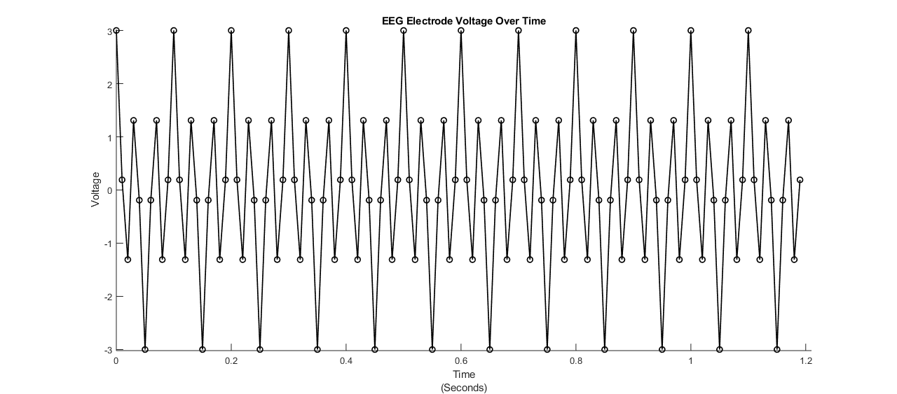
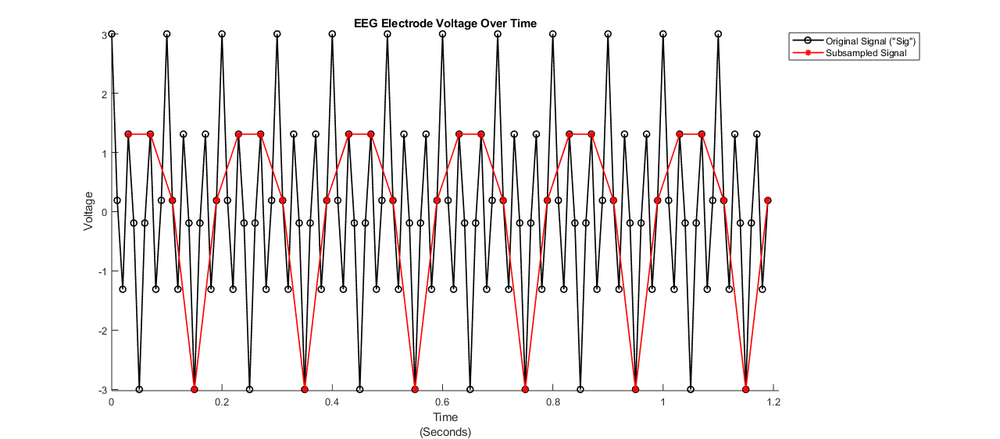
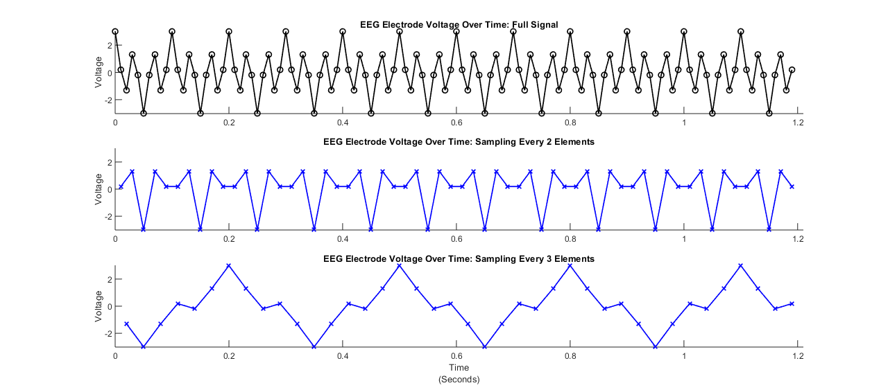
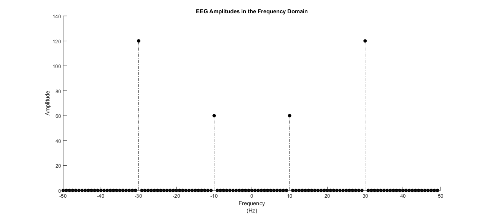
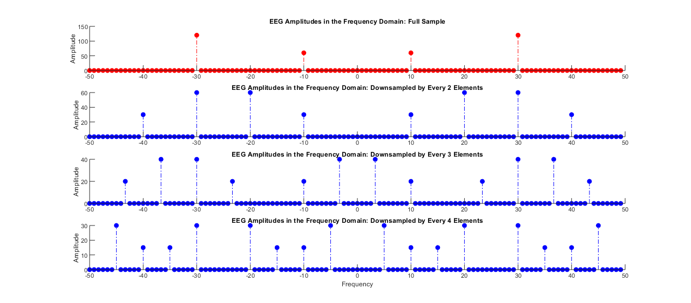

Contents
HW # 3 - Question 5 - Math Tools - Matthew DeVerna
clear
close all
Question 5: Sampling and Aliasing.
load('myMeasurements.mat')
Plot "sig" as a function of time, in seconds
N=120 ;
fs = 100 ;
buff = .02 ;
scaled_time = time/fs ;
fft_domain = [-N/2: (N/2 -1)] * (fs/N) ;
ax_Lims = [0 max(scaled_time)+buff min(sig)-buff max(sig)+buff] ;
figure ;
plot(scaled_time, sig, 'ko-', 'LineWidth', 1.25)
title('EEG Electrode Voltage Over Time')
xlabel({'Time' '(Seconds)'})
ylabel('Voltage')
box off
axis(ax_Lims)

(A) Creating and Plotting a Subsample
SubSamplingSummary = {'We can see in the plot below that taking a subsample of a signal is a'
'problematic approach to summarize a signal. This type of approach may'
'be linear, because you take an accurate sample at each (equally spaced)'
'step, however, this approach will not be shift invariant. We see it is'
'not shift invariant because if you sample at every 2nd vs. 3rd vs kth'
'element, there is always a potential that you will get a very misleading'
'signal.'}
step = 4 ;
step_one = zeros(1,step) ;
step_one(4) = 1 ;
steps_in_sig = 120/step ;
sub_sample_index = repmat(step_one,[1 ,steps_in_sig]) ;
sub_sample_index = logical(sub_sample_index) ;
sig_subsample = sig(sub_sample_index) ;
time_subsample = scaled_time(sub_sample_index) ;
figure ;
plot(scaled_time, sig, 'ko-', 'LineWidth', 1.25)
hold on
plot(time_subsample,sig_subsample, 'r*-', 'LineWidth', 1.25)
hold on
title('EEG Electrode Voltage Over Time')
xlabel({'Time' '(Seconds)'})
ylabel('Voltage')
box off
axis(ax_Lims)
legend('Original Signal ("Sig")','Subsampled Signal', 'Location', 'northeastoutside')
SubSamplingSummary =
7×1 cell array
{'We can see in the plot below that taking a subsample of a signal is a' }
{'problematic approach to summarize a signal. This type of approach may' }
{'be linear, because you take an accurate sample at each (equally spaced)' }
{'step, however, this approach will not be shift invariant. We see it is' }
{'not shift invariant because if you sample at every 2nd vs. 3rd vs kth' }
{'element, there is always a potential that you will get a very misleading'}
{'signal.' }

Subsampling at Different Rates
figure ;
subplot(3,1,1)
plot(scaled_time, sig, 'ko-', 'LineWidth', 1.25)
title('EEG Electrode Voltage Over Time: Full Signal')
ylabel('Voltage')
box off
axis(ax_Lims)
for ii = [2, 3]
step = ii ;
step_one = zeros(1,step) ;
step_one(ii) = 1 ;
steps_in_sig = 120/step ;
sub_sample_index = repmat(step_one,[1 ,steps_in_sig]) ;
sub_sample_index = logical(sub_sample_index) ;
sig_subsample = sig(sub_sample_index) ;
time_subsample = scaled_time(sub_sample_index) ;
subplot(3,1,ii)
plot(time_subsample,sig_subsample, 'bx-', 'LineWidth', 1.25)
title('EEG Electrode Voltage Over Time: Sampling Every ' + string(ii) + ' Elements')
ylabel('Voltage')
box off
axis(ax_Lims)
end
xlabel({'Time' '(Seconds)'})
Plot = {'The bottom two signals are subsamples of the top full signal. You can'
'clearly see that each one of these subsamples paints a very different'
'picture as to what the original signal consists of.'}
Plot =
3×1 cell array
{'The bottom two signals are subsamples of the top full signal. You can'}
{'clearly see that each one of these subsamples paints a very different'}
{'picture as to what the original signal consists of.' }

(B) Examine the EEG Results in the Frequency Domain
eeg_amps = abs(fft(sig)) ;
eeg_centered = fftshift(eeg_amps) ;
figure ;
stem(fft_domain, eeg_centered, 'filled', 'k-.')
box off
title('EEG Amplitudes in the Frequency Domain')
xlabel({'Frequency' '(Hz)'})
ylabel('Amplitude')
max_amp = max(eeg_centered) ;
max_band = fft_domain(eeg_centered == max_amp)
LargestBand = {'As we can see the largest response is found in the "beta" band at 30Hz'}
max_band =
-30 30
LargestBand =
1×1 cell array
{'As we can see the largest response is found in the "beta" band at 30Hz'}

(C) Plot Fourier Magnitudes for Downsampled Versions of the Original EEG Signal
FoldingAnswer = {'In the below plots, what we''re seeing is the effect of "folding". Any'
'frequencies that are higher than the Nyquist frequency in a continuous'
'signal will be aliased or "folded" into lower frequencies when when we'
'sample it discretely. One way to handle this is to filter the signal to'
'remove higher frequencies before the signal is sampled.'}
figure ;
subplot(4,1,1)
stem(fft_domain, eeg_centered, 'filled', 'r-.')
box off
title('EEG Amplitudes in the Frequency Domain: Full Sample')
ylabel('Amplitude')
for ii = [2, 3, 4]
step = ii ;
step_one = zeros(1,step) ;
step_one(ii) = 1 ;
steps_in_sig = 120/step ;
sub_sample_index = repmat(step_one,[1 ,steps_in_sig]) ;
sub_sample_index = logical(sub_sample_index) ;
sig_down_sample = zeros(1, length(sig)) ;
sig_down_sample(sub_sample_index) = sig(sub_sample_index) ;
down_sampled_amps = abs(fft(sig_down_sample)) ;
down_sampled_amps_centered = fftshift(down_sampled_amps) ;
subplot(4,1,ii)
stem(fft_domain, down_sampled_amps_centered, 'filled', 'b-.')
box off
title('EEG Amplitudes in the Frequency Domain: Downsampled by Every ' + string(ii) + ' Elements')
ylabel('Amplitude')
end
xlabel({'Frequency'})
FoldingAnswer =
5×1 cell array
{'In the below plots, what we're seeing is the effect of "folding". Any' }
{'frequencies that are higher than the Nyquist frequency in a continuous' }
{'signal will be aliased or "folded" into lower frequencies when when we' }
{'sample it discretely. One way to handle this is to filter the signal to'}
{'remove higher frequencies before the signal is sampled.' }
